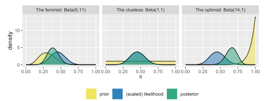
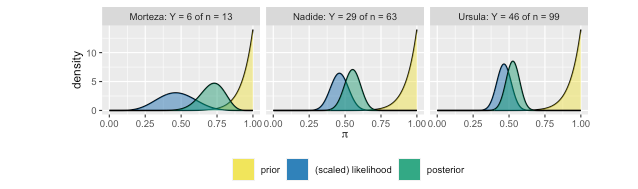

Een blog over de principes van de Bayesiaanse theorie
Bayesiaans
Author
Johnson e.a. en Harrie Jonkman
Published
March 7, 2022
Bayes Rules!
Inleiding
Onlangs verscheen een prachtig boek van Alicia A. Johnson, Miles Q. Ot en Mine Dogucu onder de titel Bayes Rules! An Introduction to Applied Bayesian Modeling en het verscheen bij CRC Press (2022). Eerdere versies kon je al via bookdown bekijken (https://www.bayesrulesbook.com/) en vanaf de eerste keer dat ik het zag, was ik hier heel enthousiast over. Het boek heb ik direct besteld en vorige week kon ik het ophalen.
Het boek bestaat uit vier duidelijke delen. Het eerste deel gaat in op de fundamenten van het Bayesiaanse perspectief. Het leert je denken als een Bayesiaan en het gaat in op die belangrijke Bayesiaanse regel \(posterior=\frac{prior.likelihood}{normaliserende constante}\). Aan de hand van enkele voorbeelden gaan Johnson e.a. in op hoe het in de praktijk werkt. Daarna gaat het in op hoe kennis en data op elkaar inwerken en het laat enkele basisanalyses zien en hoe dat in deze vorm van statistiek werkt (normaal, binair en poisson). Het tweede deel is een meer technisch hoofdstuk en laat je ook onder de moterkap van deze techniek kijken. Het gaat ook op de wetenschappelijke principes van de benadering, waar je hier op moet letten, hoe je hiermee hypothesen kunt testen (niet alleen tov van een nulhypothese, maar hoeveel beter de ene hypothese is ten opzichte van de andere hyposthese) en hoe je hiermee ook kunt voorspellen. De twee volgende delen (Deel drie en vier) zijn praktische delen. Deel drie gaat in op regressieanalyses voor continue variabelen en classificatieanalyses voor binaire variabelen. Het vierde deel, ten slotte, gaat in op geclusterde datasets en hoe je hierarchische Bayesiaanse regressie en classificatieanalyses uitvoert.
Natuurlijk, er zijn onderhand al verschillende interessante boeken te krijgen die je laten zien hoe Bayesiaanse denken in de praktijk kan werken. De boeken van Gelman, McElreath, Spiegelhalter en Kruschke verschenen de afgelopen tien/vijftien jaar en leren je dit. Maar Bayes Rules! vind ik op dit moment als introductieboek mogelijk wel het beste.
Nu het boek bij mij op het bureau ligt, kan ik er binnenkort een keer een korte recensie over schrijven. Voor nu heb ik uit elk deel een hoofdstuk genomen en het vertaald en bewerkt. Hieronder zie je een bewerking van het het vierde hoofdstuk van het eerste deel (Balance and Sequentiallity in Bayesian Analysis).Deze hoofdstukken zo overzetten is voor mij niet alleen een goede manier om het mij eigen te maken, maar ook een manier om het boek anderen aan te raden. Dus lezen en gebruiken deze Bayes Rules! An Introduction to Applied Bayesian Modeling
Balans en opeenvolging in Bayesiaanse Analyses
In Alison Bechdels stripverhaal The Rule uit 1985 zegt een personage dat ze alleen naar een film gaan als die aan de volgende drie regels voldoet (Bechdel 1986):
er moeten minstens twee vrouwen in de film voorkomen;
deze twee vrouwen praten met elkaar; en
ze praten over iets anders dan een man.
Deze criteria vormen de Bechdel-test voor de vertegenwoordiging van vrouwen in films. Als je aan films denkt die je hebt gezien, welk percentage van alle recente films slaagt dan volgens jou voor de Bechdel-test? Ligt dat dichter bij 10%, 50%, 80%, of 100%?
Laat \(\pi\), een willekeurige waarde tussen 0 en 1, het onbekende aandeel van recente films zijn die de Bechdel test doorstaan. Drie vrienden - de feminist, de onwetende, en de optimist - hebben enkele vooroordelen over \(\pi\). Nadenkend over films die zij in het verleden heeft gezien, begrijpt de feminist dat het in de meeste films ontbreekt aan sterke vrouwelijke personages. De onwetende herinnert zich niet echt de films die hij gezien heeft, en weet dus niet zeker of het halen van de Bechdel test gebruikelijk of ongewoon is. De optimist ten slotte denkt dat de Bechdel-test een erg lage lat is voor de vertegenwoordiging van vrouwen in films, en gaat er dus van uit dat bijna alle films de test doorstaan. Dit alles om te zeggen dat drie vrienden drie verschillende voorafgaande modellen hebben van \(\pi\). Geen probleem! Een Beta kan voorafgaand aan het opstellen van een model worden afgestemd op iemands voorkennis (zie de figuur hieronder).
Door de grootste aannemelijkheid vooraf te geven aan de waarden van \(\pi\) die lager zijn dan 0,5, weerspiegelt de Beta(5,11) prior het inzicht van de feminist: de meerderheid van de films doorstaat de Bechdel test niet. De Beta(14,1) daarentegen plaatst een grotere aannemelijkheid vooraf op waarden van \(\pi\) in de buurt van 1, en komt dus overeen met de vooronderstelling van de optimist. Dan blijft de Beta(1,1) of Unif(0,1) over die, door een gelijke aannemelijkheid te geven aan alle waarden van \(\pi\) tussen 0 en 1, dat overeenkomt met het figuurlijke schouderophalen van de onwetende - het enige dat zij weet is dat \(\pi\) een proportie is, en dus ergens tussen 0 en 1 ligt.
De drie analisten komen overeen een steekproef te nemen van \(n\) recente films en noteren \(Y\), het aantal dat de Bechdel test doorstaat. Herkenning van \(Y\) als het aantal “successen” in een vast aantal onafhankelijke proeven, specificeren zij de afhankelijkheid van \(Y\) van \(\pi\) met behulp van een binomiaal model. Elke analist heeft dus een uniek Beta-Binomiaal model van \(\pi\) met verschillende voorafgaande hyperparameters \(\alpha\) en \(\beta\):
We weten dat elke analist een uniek posterior model heeft van \(\pi\) dat afhangt van zijn of haar unieke prior (via \(\alpha\) en \(\beta\)) en de gemeenschappelijke waargenomen gegevens (via \(Y\) en \(n\))
\[\pi|(Y=y) \sim Beta (\alpha + y, \beta +n - Y)\]
Als je denkt “Kan iedereen zijn eigen voorkeuren hebben?! Zal dit altijd zo subjectief zijn?!” dan stel je de juiste vragen! En de vragen houden daar niet op. In hoeverre zouden hun verschillende priors van de analisten kunnen leiden tot drie verschillende posterior conclusies over de Bechdel test? Hoe zou dit kunnen afhangen van de steekproefgrootte en de uitkomsten van de filmgegevens die ze verzamelen? In hoeverre zullen de posterior inzichten van de analisten evolueren naarmate ze meer en meer gegevens verzamelen? Zullen ze het ooit eens worden over de vertegenwoordiging van vrouwen in film? We zullen deze fundamentele vragen hier onderzoeken en wij kijken naar ons vermogen om het Bayesiaanse denken verder te ontwikkelen.
Dus:
- We onderzoek de evenwichtige invloed van de prior en data op de posterior.
- We voeren verschillende achtereenvolgende Bayesiaanse analyses uit.
# Laten we eerst de pakketten openen die we in dit hoofstuk zullen gebruiken (wel eerst binnenhalen)library(bayesrules)library(tidyverse)
Warning: package 'tidyverse' was built under R version 4.1.3
v ggplot2 3.3.6 v purrr 0.3.4
v tibble 3.1.7 v dplyr 1.0.9
v tidyr 1.2.0 v stringr 1.4.1
v readr 2.1.2 v forcats 0.5.1
Warning: package 'ggplot2' was built under R version 4.1.3
Warning: package 'tibble' was built under R version 4.1.3
Warning: package 'tidyr' was built under R version 4.1.3
Warning: package 'readr' was built under R version 4.1.3
Warning: package 'dplyr' was built under R version 4.1.3
Warning: package 'stringr' was built under R version 4.1.3
-- Conflicts ------------------------------------------ tidyverse_conflicts() --
x dplyr::filter() masks stats::filter()
x dplyr::lag() masks stats::lag()
library(janitor)
Attaching package: 'janitor'
The following objects are masked from 'package:stats':
chisq.test, fisher.test
Verschillende priors, verschillende posteriors
De voorafgaande modellen van \(\pi\) (het percentage recente films dat de Bechdel test doorstaat) zijn afgestemd op de onwetende, de feministe, en de optimist. Niet alleen weerspiegelen de verschillende prior gemiddelden onenigheid over de vraag of \(\pi\) dichter bij 0 of 1 ligt, maar ook weerspiegelen hun verschillende niveaus van variabiliteit het feit dat de drie analisten niet allemaal even zeker zijn van hun kennis en informatie. Hoe zekerder ze daarover zijn, hoe kleiner de voorafgaande variabiliteit. Maar ook, hoe vager de prior-informatie, hoe groter de prior-variabiliteit. De priors van de optimist en de onwetende vertegenwoordigen hier twee uitersten. Een Beta(14,1) prior vertoont de kleinste variabiliteit en daarmee is de optimist het meest zeker in zijn prioriteitsbegrip van \(\pi\) (of om duidelijker te zijn, dat bijna alle films de Bechdel test zullen doorstaan). Dergelijke priors noemen we informatief.
Een informatieve prior reflecteert specifieke informatie over de onbekende variabele met grote zekerheid, bv. lage variabiliteit.
Met de grootste prioriteitsvariabiliteit is de onwetende het minst zeker over \(\pi\). In feite kent deze Beta(1,1) prior evenveel prior plausibiliteit toe aan elke waarde van \(\pi\) tussen 0 en 1. Dit type prior model van “schouderophalen” (van “ik weet het echt niet”) heeft een officiële naam: het is een vage prior.
Een vage of diffuse prior reflecteert weinig specifieke informatie over de onbekende variabele. Een vlakke prior die gelijke plausibiliteit toekent aan alle mogelijke waarden van de variabele, is een speciaal geval.
De volgende voor de hand liggende vraag is dan: hoe zullen hun verschillende priors de posterior conclusies van de feminist, de onwetende en de optimist beïnvloeden? Om deze vraag te beantwoorden, hebben we gegevens nodig. Onze analisten besluiten een willekeurige steekproef te nemen van \(n=20\) recente films te bekijken, gebruikmakend van gegevens die verzameld zijn voor het FiveThirtyEight-artikel over de Bechdel-test Het bayesrules-pakket bevat een gedeeltelijke versie van deze dataset, genaamd bechdel. Een volledige versie wordt geleverd door het fivethirtyeight R-pakket (Kim, Ismay, and Chunn 2020). Samen met de titel en het jaar van elke film in deze dataset, geeft de binaire variabele aan of de film slaagde of niet voor de Bechdel test:
# Importeer datadata(bechdel, package ="bayesrules")# Neem een sample van 20 filmsset.seed(84735)bechdel_20 <- bechdel %>%sample_n(20)bechdel_20 %>%head(3)
# A tibble: 3 x 3
year title binary
<dbl> <chr> <chr>
1 2005 King Kong FAIL
2 1983 Flashdance PASS
3 2013 The Purge FAIL
Van de 20 films in deze steekproef slaagden er slechts 9 (45%) voor de test:
binary n percent
FAIL 11 0.55
PASS 9 0.45
Total 20 1.00
De posterior modellen van de drie analisten voor\(\pi\) die volgen uit de formule \(\pi|(Y=y) \sim Beta(\alpha+y, \beta+n-y)\) op hun unieke voorgaande modellen en gemeenschappelijke filmgegevens, zijn samengevat in tabel hieronder en de figuur hierboven. Bijvoorbeeld, de posterior parameters van de feminist worden berekend door \(\alpha+y=5+9=14\) en \(\beta+n-y=11+20-9=22\)
Analyst
Prior
Posterior
feminist
Beta(5,11)
Beta(14,22)
onwetende
Beta(1,1)
Beta(10,12)
optimist
Beta(14,1)
Beta(23,12)
Had je instinct gelijk? Herinner je dat de optimist begon met het vasthoudend optimistisme vooraf over \(\pi\) - zijn prior model had een hoog gemiddelde met lage variabiliteit. Het is dan ook niet verwonderlijk dat zijn posterior model niet zo synchroon loopt met de gegevens als de posteriors van de andere analisten. De trieste gegevens waarbij slechts 45% van de 20 films de test doorstonden was niet genoeg om hem ervan te overtuigen dat er een probleem is in Hollywood - hij denkt nog steeds dat de waarden van \(\pi\) boven 0,5 het meest plausibel is. Aan het andere uiterste staat de onwetende die begon met een vlak, vaag model van \(\pi\). Zonder enige voorinformatie weerspiegelt zijn posterior model direct de inzichten die zijn verkregen uit de waargenomen filmgegevens. In feite is zijn posterior niet te onderscheiden van de geschaalde likelihood functie.

Posterior models
Verschillende data, verschillende posteriors
Als jij je zorgen maakt over het feit dat onze drie analisten achteraf verschillende opvattingen hebben over \(\pi\), de proportie van recente films die de Bechdel halen, wanhoop dan nog niet. Vergeet niet dat data ook een rol spelen in een Bayesiaanse analyse. Om deze dynamiek te onderzoeken, beschouwen we drie nieuwe analisten - Morteza, Nadide, en Ursula - die allen de optimistische Beta(14,1) prior voor \(\pi\) delen maar elk toegang hebben tot andere gegevens. Morteza beoordeelt \(n=13\) films uit het jaar 1991, waarvan \(Y=6\) (ongeveer 46%) door de Bechdel komen:
binary n percent
FAIL 53 0.5353535
PASS 46 0.4646465
Total 99 1.0000000
Wat een toeval! Hoewel Morteza, Nadide, en Ursula verschillende gegevens hebben verzameld, constateren ze elk een Bechdel slaagpercentage van ongeveer 46%. Toch is hun steekproefomvang \(n\) verschillend - Morteza bekeek slechts 13 films terwijl Ursula er 99 bekeek.
De posterior modellen van de drie analisten voor \(\pi\) die volgen uit de toepassing van hun gegevens op hun gemeenschappelijke Beta(14,1) voormodel en unieke filmgegevens, zijn samengevat in de figuur en tabel hieronder. Merk op dat hoe groter de steekproefgrootte \(n\) hoe “indringender” de likelihoodfunctie. Bijvoorbeeld, de waarschijnlijkheidsfunctie die het slagingspercentage van 46% in Morteza’s kleine steekproef van 13 films weergeeft is vrij breed - deze gegevens zijn relatief plausibel voor elke \(\pi\) tussen 15% en 75%. Ursula’s waarschijnlijkheidsfunctie daarentegen, met het slagingspercentage van 46% in een veel grotere steekproef van 99 films weergeeft, is smal - haar gegevens zijn onwaarschijnlijk voor \(\pi\) waarden buiten het bereik van 35% tot 55%. We zien dat hoe groter de waarschijnlijkheid, hoe meer invloed de gegevens hebben op de posterior. Morteza blijft het minst overtuigd door het lage Bechdel-slaagpercentage dat in zijn kleine steekproef wordt waargenomen, terwijl Ursula het meest overtuigd is. Haar vroege optimisme evolueerde naar een posterior begrip dat \(\p\) waarschijnlijk tussen 40% en 55% ligt.

Posterior models
Tabel: De prior en posterior modellen voor \(\pi\) zijn geconstrueerd in het licht van een gemeenschappelijke Beta(14,1)-prior en verschillende gegevens.
Analyst
Data
Posterior
Morteza
\(Y=6;n=13\)
Beta(20,8)
Nadide
\(Y=26;n=63\)
Beta(43,35)
Ursula
\(Y=46;n=99\)
Beta(60,54)
Het vinden van de balans tussen de prior en de data
Observaties aan concepten verbinden
We hebben gekeken naar de invloed die verschillende priors en verschillende gegevens kunnen hebben op ons posterior begrip van een onbekende variabele. De posterior is echter een meer genuanceerd touwtrekken tussen deze twee kanten. De figuren hieronder illustreren het evenwicht dat het posterior model vindt tussen de prior en de gegevens. Elke rij komt overeen met een uniek prior model en elke kolom met een unieke reeks gegevens.
Van links naar rechts neemt de steekproefgrootte toe van \(n=13\) tot \(n=99\) films met behoud van het aandeel films dat de Bechdel-test doorstaat: \(Y/n\sim0.46\) . De waarschijnlijkheid en, dienovereenkomstig, de invloed van de gegevens op de posterior nemen toe met de steekproefgrootte \(n\). Dit betekent ook dat de invloed van onze voorkennis afneemt naarmate we nieuwe gegevens vergaren. Verder hangt de snelheid waarmee de posterior balans doorslaat in het voordeel van de gegevens af van de prior. Van boven naar beneden over het rooster gaan de priors van informatief (Beta(14,1)) naar vaag (Beta(1,1)). Het spreekt vanzelf dat hoe informatiever de prior is, hoe groter zijn invloed op de posterior is.
Door deze waarnemingen te combineren levert de laatste kolom in het rooster een zeer belangrijke Bayesiaanse clou op: ongeacht de sterkte van en discrepanties tussen hun prioriteitsbegrip van \(\pi\) zullen drie analisten tot een gemeenschappelijke posterior interpretatie komen in het licht van sterke gegevens. Deze vaststelling is een opluchting. Als Bayesiaanse modellen niets zouden betekenen in het licht van steeds meer gegevens, zouden we een probleem hebben.
Met dit soort gegevens kun je spelen en kijken naar de rol die de prior en de data spelen in een posterior analyse, gebruik je de plot_beta_binomial() en summarize_beta_binomial() functies in het bayesrules pakket om het Beta-Binomial posterior model van \(\pi\) onder verschillende combinaties van voorafgaande Beta(\(\alpha, \beta\)) modellen en waargenomen gegevens, \(Y\) successen in \(n\) proeven:
# Plot the Beta-Binomial model
plot_beta_binomial(alpha = ___, beta = ___, y = ___, n = ___)
# Obtain numerical summaries of the Beta-Binomial model
summarize_beta_binomial(alpha = ___, beta = ___, y = ___, n = ___)
Concepten met theorie verbinden
De patronen die we hebben waargenomen in het posterior evenwicht tussen de prior en de data zijn intuïtief. Ze worden ook ondersteund door een elegant wiskundig resultaat. Daar moet je het boek maar voor lezen.
Sequentiële analyse: Evolueren met dat
We hebben de toenemende invloed van de gegevens en de afnemende invloed van de prior op de posterior onderzocht naarmate er meer en meer gegevens binnenkomen. Overweeg de nuances van dit concept. De uitdrukking “naarmate er meer gegevens binnenkomen” roept het idee op dat het verzamelen van gegevens, en daarmee de evolutie in ons begrip van de posterior, stapsgewijs gebeurt. Zo is het inzicht van wetenschappers in de klimaatverandering in de loop van tientallen jaren geëvolueerd naarmate zij nieuwe informatie kregen. Het inzicht van presidentskandidaten in hun kansen om een verkiezing te winnen evolueert in de loop van maanden naarmate nieuwe opiniepeilingen beschikbaar komen. Het bieden van een formeel kader voor deze evolutie is een van de meest krachtige eigenschappen van Bayesiaanse statistiek!
In een eerder hoofdstuk gingen ze in op Milgram’s gedragsstudie over gehoorzaamheid. Daar gaat \(\pi\) om het aandeel van de mensen die het gezag zullen gehoorzamen zelfs als dit betekent dat ze anderen schade toebrengen. In de studie van Milgram betekende gehoorzamen aan het gezag het toedienen van een zware elektrische schok aan een andere deelnemer (wat in feite een list was). Voorafgaand aan de experimenten van Milgram verwachtte een fictieve psycholoog dat weinig mensen gezag zouden gehoorzamen als ze een ander zouden schaden: \(\pi\sim Beta(1,10)\). In het onderzoek stelden we vast dat 26 van de 40 deelnemers aan het onderzoek een schok toebrachten die zij opvatten als een zware schok.
Stel nu dat de psycholoog deze gegevens stapsgewijs, dag na dag, over een periode van drie dagen verzamelde. Elke dag, evalueerde ze \(n\) proefpersonen en registreerde ze \(Y\), het aantal dat de zwaarste schok kreeg (dus \(Y|\pi \sim Bin(n,\pi)\)Y. Van de \(n=10\) dag-één deelnemers, alleen \(Y=1\) de zwaarste schok. Dus aan het eind van de eerste dag is het begrip van de psycholoog van \(\pi\) al geëvolueerd en blijkt
\[\pi|Y=1) \sim Beta(2,19)\]
Dag twee was veel drukker en de resultaten grimmiger: onder \(n=20\) deelnemers, gaf \(Y=17\) de zwaarste schok. Aan het eind van dag twee was het begrip van de psycholoog van \(\pi\) opnieuw geëvolueerd - \(\pi\) was waarschijnlijk groter dan zij hadden verwacht. Dus, het posterior model van \(\pi\) aan het eind van dag twee is \(Beta(19,22)\). Op dag drie heeft \(Y=8\) van \(n=10\) deelnemers de zwaarste schok toegediend, en dus is het model geëvolueerd van een \(Beta(19,22)\) prior naar een \(Beta(27,24)\) posterior. De volledige evolutie van de oorspronkelijke \(Beta(1,10)\) prior van de psycholoog naar een \(Beta(27,24)\) posterior aan het einde van de driedaagse studie is samengevat in de tabel hieronder.
Dag
Data
Model
0
NA
Beta(1,10)
1
\(Y=1;n=10\)
Beta(2,19)
2
\(Y=17;n=20\)
Beta(19,22)
3
\(Y=8;n=10\)
Beta(27,24)
Het proces dat we zojuist hebben doorlopen, het incrementeel bijwerken van het posterior model van de psycholoog wordt meer algemeen een sequentiële Bayesiaanse analyse of Bayesiaans leren genoemd.
De mogelijkheid om te evolueren naarmate nieuwe gegevens binnenkomen, is een van de krachtigste kenmerken van het Bayesiaanse raamwerk. Dit soort sequentiële analyses heeft ook twee fundamentele en gemeenschappelijke sensitieve eigenschappen. Ten eerste is het uiteindelijke posterior model invariant t.a.v. data volgorde: het wordt niet beïnvloed door de volgorde waarin we de data observeren. Bijvoorbeeld, stel dat de psycholoog de studiegegevens van Milgram in omgekeerde volgorde had geobserveerd: \(Y=8\) van \(n=10\) op dag één, \(Y=17\) van \(n=20\) op dag twee, en \(Y=1\) van \(n=10\) op dag drie. De resulterende evolutie in hun begrip van \(\pi\) is samengevat in de tabel hieronder. Het evoluerende begrip van de psycholoog van \(\pi\) verloopt een ander pad. Het eindigt echter nog steeds op dezelfde plaats - de Beta(27,24) posterior.
Dag
Data
Model
0
NA
Beta(1,10)
1
\(Y=8;n=10\)
Beta(9,12)
2
\(Y=17;n=20\)
Beta(26,15)
3
\(Y=1;n=10\)
Beta(27,24)
Het tweede fundamentele kenmerk van een sequentiële analyse is dat de uiteindelijke posterior alleen afhangt van de cumulatieve gegevens. Bijvoorbeeld, in de gecombineerde drie dagen van Milgram’s experiment, waren er \(n=10+20+20=40\) deelnemers die \(Y=1+17+8=26\) de zwaarste schok opleverde. In paragraaf 3.6 evalueerden wij deze gegevens in één keer, niet stapsgewijs. Daarbij sprongen wij rechtstreeks van het oorspronkelijke Beta(1,10) model van de psycholoog naar het Beta(27,24) posterior model van \(\pi\). Dat wil zeggen, of we de gegevens nu incrementeel of in één keer evalueren, we komen op dezelfde plaats uit.
Bewijs van invariantie van gegevensvolgorde
In de vorige sectie zag je het bewijs van datavolgorde invariantie in actie. Hier zullen we bewijzen dat alle Bayesiaanse modellen van deze eigenschap genieten. Dit deel is leuk, maar hoef je niet echt te weten voor je toekomstige werk.Hier gaan we daar niet verder op in (ook voor dit meer technische deel moet je het boek lezen).
Een opmerking over subjectiviteit
We zinspeelden eerder op een veelgehoorde kritiek op Bayesiaanse statistiek - het is te subjectief. In het bijzonder zijn sommigen bezorgd dat het “subjectief” afstemmen van een prior model een Bayesiaanse analist in staat stelt om tot elke conclusie te komen die hij wil. In het licht van wat we hier hebben geleerd, kunnen we deze kritiek meer rigoureus bestrijden. Voordat we dat doen, willen we eerst een aantal concepten nog eens nader bekijken en uitbreiden.
Bevestigd is dat een Bayesiaan inderdaad een prior kan bouwen op basis van “subjectieve” ervaring. Heel zelden is dit een slechte zaak, en heel vaak is het een goede zaak! In het beste geval kan een subjectieve prioriteit een schat aan ervaringen uit het verleden weerspiegelen die in onze analyse moeten worden opgenomen - het zou jammer zijn dat niet te doen. Zelfs als een subjectieve prior ingaat tegen het feitelijk waargenomen bewijs, verdwijnt zijn invloed op de posterior naarmate dit bewijs zich opstapelt. We hebben één uitzondering gezien in het ergste geval. En het was te voorkomen. Als een subjectieve prioriteit koppig genoeg is om de waarschijnlijkheid van 0 toe te kennen aan een mogelijke parameterwaarde, zal geen hoeveelheid tegenbewijs genoeg zijn om het te veranderen.
Tenslotte, hoewel we je aanmoedigen om kritisch te zijn in je toepassing van Bayesiaanse methoden, maak je alsjeblieft geen zorgen dat ze subjectiever zijn dan frequentistische methoden. Geen mens is in staat om alle subjectiviteit uit een analyse te halen. De levenservaringen en kennis die we met ons meedragen bepalen alles, van de onderzoeksvragen die we stellen tot de data die we verzamelen. Het is belangrijk om zowel bij Bayesiaanse als bij frequentistische analyses rekening te houden met de mogelijke implicaties van deze subjectiviteit.
Samenvatting
Wij hebben het evenwicht onderzocht dat een posterior model aanbrengt tussen een prior model en de gegevens. In het algemeen zagen wij de volgende tendensen:
Invloed van de prior
Hoe minder vaag en hoe informatiever de prior, d.w.z. hoe groter onze priorzekerheid, hoe meer invloed de prior op de posterior heeft.
Invloed van de gegevens
Hoe meer gegevens we hebben, hoe meer invloed de gegevens hebben op de posterior. Dus, als twee onderzoekers voldoende gegevens hebben, zullen ze met verschillende priors vergelijkbare posteriors hebben.
Verder hebben we gezien dat we in een sequentiële Bayesiaanse analyse ons posterior model incrementeel bijwerken naarmate er meer en meer gegevens binnenkomen. De uiteindelijke bestemming van deze posterior wordt niet beïnvloed door de volgorde waarin we deze gegevens observeren (d.w.z. de posterior is datavolgorde invariant) of door de vraag of we de gegevens in één keer of opbouwend observeren.